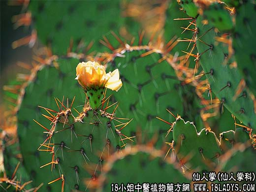

【中药概述】
仙人掌为仙人掌科植物仙人掌的全株。甘，寒。归心、肺、胃经。
1．行气活血：用于心胃气痛，胃肠溃疡，胃酸多，痞块，痢疾，痔疮出血等症。有散瘀消肿这作用。
2．清热解毒：用于喉痛，腮腺炎，肺痈，乳痈，疔疱，烫火伤等。
【临证应用】
1.治疗急性乳腺炎；
2.胃及十二指肠溃疡；
3.冻伤（取仙人掌捣糊，敷于患处，3天换药一次）；4.牙痛（急性牙髓炎、牙周炎）；5.流行性腮腺炎（取仙人掌捣烂，加95％酒精50毫升调匀，外敷局部，日2次）。
【化学成分】
含三萜，苹果酸，琥珀酸、粘液质。灰分中含24％碳酸钾。
【用量用法】
本品9——30g，水煎服，外用鲜品适量。去刺。
【使用注意】
虚寒者忌用，其汁禁入眼内，忌铁器。
【附】】
仙人球（为仙人掌科植物仙人球属的全株）。甘、酸，寒。清热解毒，消肿止疼：适用于肺热咳嗽，痰中带血，胃疼等症。外敷可治疗蛇虫咬伤及水火烫伤。9～30g，水煎服，外用鲜品适量。去刺。